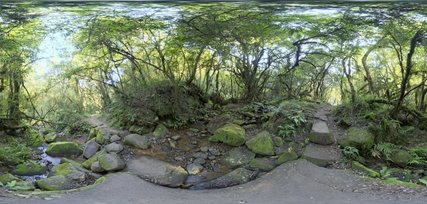
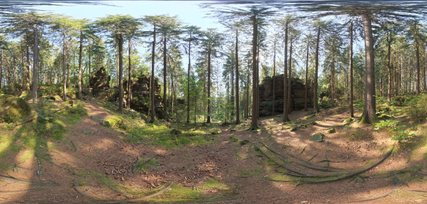
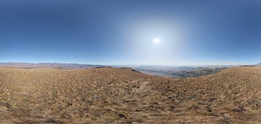
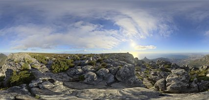
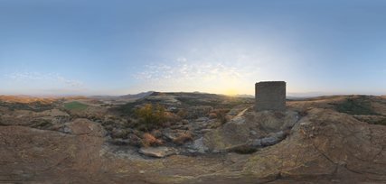
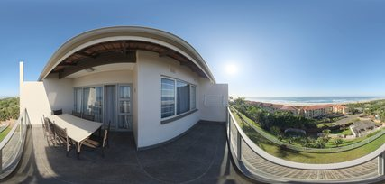
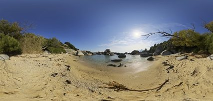
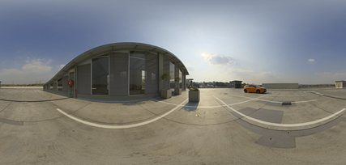
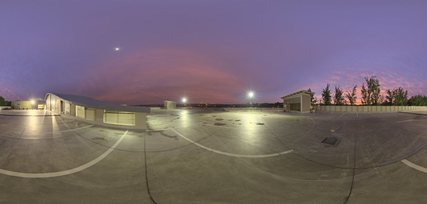
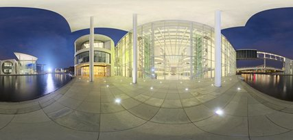

Five style packs for the 3D walkthrough. Every swatch is the actual CC0 texture the renderer will use, tinted the way the renderer tints it. Prices are dummy values placed in real Malaysian retail bands (see docs/pricing.md). Generated by npm run build:moodboards.
Kinari Living · price tier 0.80 of 2
Light oak, washed cotton, nothing extra.
| Living / dining floor | Natural oak |
| Bedroom floor | Natural oak |
| Toilets & yard | Warm terrazzo |
| Walls | Paint #F4F1EA |
| Ceiling | Paint #F7F5F0 |
| Doors | White-washed ash |
| Window frames | White aluminium |
| Kitchen fronts | White-washed ash |
| Worktop | White quartz |
| Room lights | 2900 K |
Sources: Livingetc: Muji-style living rooms · Castlery: Japandi interior design
Washitsu Atelier · price tier 1.05 of 2
Tatami, shoji light and darker timber, close to the floor.
| Living / dining floor | Hinoki cypress |
| Bedroom floor | Rush tatami |
| Toilets & yard | Dark cast concrete |
| Walls | Paint #EFE8DC |
| Feature wall | Clay plaster |
| Ceiling | Paint #F3EEE2 |
| Doors | Smoked oak |
| Window frames | Satin bronze |
| Kitchen fronts | Smoked oak |
| Worktop | Dark cast concrete |
| Room lights | 2700 K |
Sources: MasterClass: Japandi · Castlery: Japandi interior design
Monolith & Form · price tier 1.25 of 2
Raw concrete and steel, warmed with walnut and leather.
| Living / dining floor | Microcement |
| Bedroom floor | Smoked oak |
| Toilets & yard | Dark cast concrete |
| Walls | Paint #EDEBE7 |
| Feature wall | Raw concrete |
| Ceiling | Paint #E3E1DD |
| Doors | Black-stained oak |
| Window frames | Black powder-coated steel |
| Kitchen fronts | Dark cast concrete |
| Worktop | Brushed stainless steel |
| Room lights | 3000 K |
Sources: Home & Texture: Brutalism interior design · Livingetc: Milanese brutalist-inspired home
Garis Studio · price tier 0.55 of 2
Hidden storage, flush surfaces, light that comes from nowhere.
| Living / dining floor | Large-format matte porcelain |
| Bedroom floor | Natural oak |
| Toilets & yard | Large-format matte porcelain |
| Walls | Paint #F5F3EF |
| Ceiling | Paint #F8F7F4 |
| Doors | Matte white lacquer |
| Window frames | White aluminium |
| Kitchen fronts | Matte white lacquer |
| Worktop | White quartz |
| Room lights | 3500 K |
Maison Tenang · price tier 1.75 of 2
One tonal family, real materials, nothing shouting.
| Living / dining floor | Honed travertine |
| Bedroom floor | Oak herringbone |
| Toilets & yard | Honed travertine |
| Walls | Paint #EFE7DC |
| Feature wall | Limewash |
| Ceiling | Paint #F4EFE8 |
| Doors | American walnut |
| Window frames | Satin bronze |
| Kitchen fronts | American walnut |
| Worktop | Honed travertine |
| Room lights | 2700 K |
Sources: Olive et Oriel: Quiet luxury styling guide · Dezeen: Dieter Vander Velpen, understated luxury
Outside the windows
The balcony faces north. KL sits at 3°N, so the sun passes north of overhead from about April to August and south of it the rest of the year.
Level 5 · about 15 m up, among the trees' middle layer
Rendered by us in Blender (tropical trees are missing from the CC0 libraries). Rendered at several times of day; close trees as 3D cards so they shift as you walk.


Lighting reference only (temperate forest)
Level 12 on a hillside, looking across a valley
Poly Haven HDRI with the sky cut out, under our computed sky; mist layers for depth.



Candidates (CC0)
Level 10 · about 30 m up
Poly Haven HDRI shot from a balcony, plus an animated sea surface and palms in front.


Candidates (CC0)
Level 38 · about 115 m up
Rendered by us in Blender: towers with lit windows at night, haze by day. References show the light we are matching.



Lighting references (CC0)